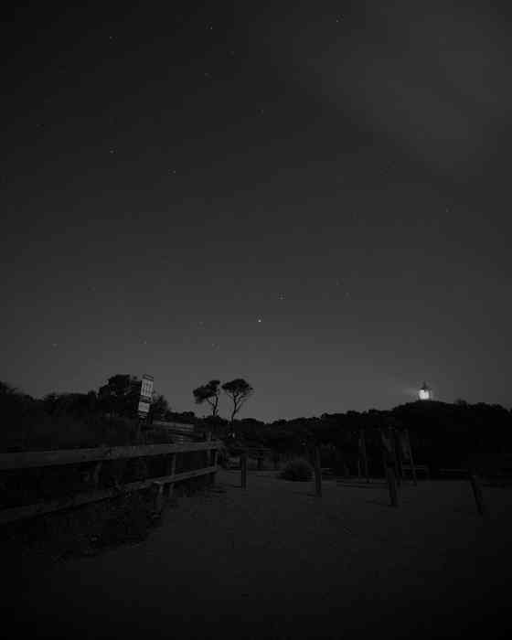
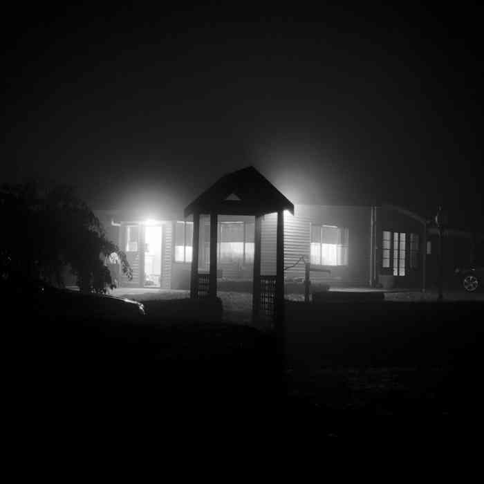

Lightning over Port Phillip BayMornington Peninsula, Victoria
Documentary, urban and landscape photography focused on atmosphere, weather, place and the overlooked moments in between.
A first live selection from the wider Dylan Leary Photography portfolio. More images and collections can be added as the site develops.


Dylan Leary is an Australian photographer working across black-and-white documentary photography, street scenes, landscapes, architecture and dramatic weather.
@dylanlearyphotography